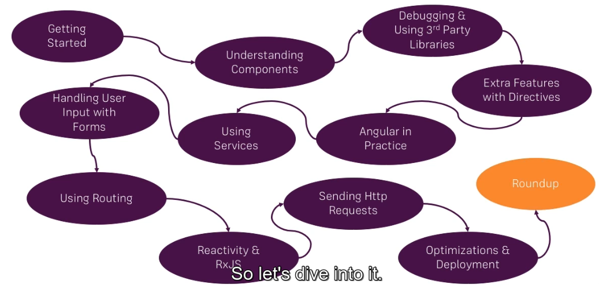

Here I will use typescript throughout course.
Here I mentioned that we actually need a more complex workflow. Now what do I mean with workflow? I mean that we can't just import the angular framework as a script file in our HTML fall and then import our own code in HTML fall and get started.
Instead we need a different setup. We need a project where we actually are able to write our code in typescript and then in the end before we create the files which we actually serve in the browser.
Before that happens we compile typescript and if we only have such a setup. We can also add some other features like using it as six features for example which actually shipped with typescript so that we can use next generation javascript features today.
Now setting up such a workflow would be relatively complex because the angular framework itself is not a trivial framework. However there is a great and essential tool you can and you should use the angular cli and with it true angular projects is a breeze and super simple let's install the cli and let's then create our first project.
1. go to nodejs.org where we need to install the nodejs.
2. then go to angular.io and follow the cli command for creating a our first app.
npm install -g @angular/cliNow here you need Visual Studio Code Editor to edit the code.
Course Outline
